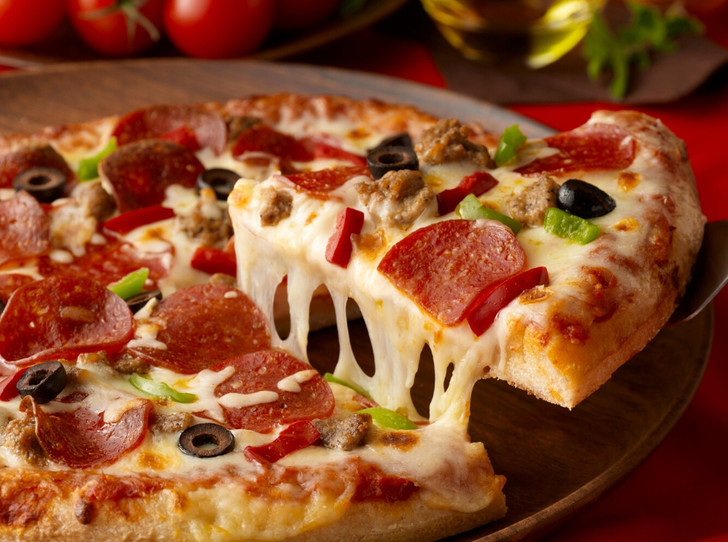

Дрожжевая пицца с колбасой, помидорами и сыром
Приготовить пиццу из дрожжевого теста в домашних условиях не составит труда! Главное, чтобы тесто было удачным, тогда пицца исчезнет со стола, не успев остыть.
Тесто, которое я вам сегодня покажу, как раз из таких. Из него получится одинаково хорошо как толстая, так и тонкая основа для пиццы. А начинка в данном случае традиционная - колбаса, сладкий перец, помидоры и сыр. Дрожжевая пицца удалась на славу!

Продукты (на 2 порции)
Для теста:
- Мука - 150 г (1 стакан 250 мл)
- Дрожжи сухие - 3 г
- Вода - 80 мл
- Масло подсолнечное или оливковое - 1 ст. ложка
- Соль - 0,25 ч. ложки
- Сахар - 0,5 ч. ложки
Для начинки:
- Сыр твёрдый - 100 г
- Колбаса - 100 г
- Помидор (крупный) - 1 шт.
- Кетчуп - 2 ст. ложки
- Перец красный сладкий - 60 г
- Масло сливочное - 25 г
- Лук зелёный - по вкусу
Пошаговый фото рецепт с фото будет доступен сразу после →РЕГИСТРАЦИИ←